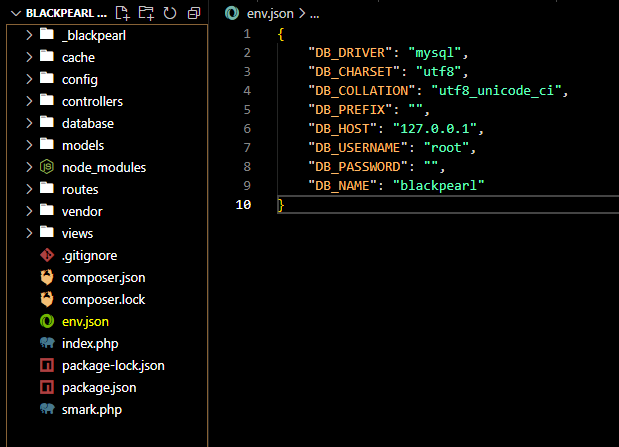

BlackPearl is a simple and lightweight PHP MVC (Model-View-Controller) framework used for building full-stack web applications in PHP. It utilizes well-known PHP packages and libraries that you may already be familiar with, such as the Blade Templating Engine for the user interface and the Eloquent ORM (Object-Relational Mapping) system for database interaction. BlackPearl also implements a classic routing system and database migration system to enhance the developer experience.
git clone git@github.com:mjespelita/blackpearl.git
cd blackpearl
composer install
npm install
You can configure your environment variables in the env.json file.
Routing functionality is centralized within the 'routes/router.php' file. This file serves as the hub where all routes for the application are registered and managed. Here, developers can define the endpoints and corresponding actions that dictate how incoming requests are handled and processed within the application. By consolidating routing configuration in a dedicated file, BlackPearl promotes clarity and ease of maintenance, ensuring that developers can efficiently manage the application's navigation and functionality. This centralized approach to routing not only enhances organization but also facilitates rapid development and scalability, allowing for seamless expansion and modification of application routes as project requirements evolve.
$Routes->add('home', new Route('/home', [
'_controller' => 'App\Controller\HomeController::index',
]));Controllers play a pivotal role and are centrally located within the 'controllers' folder. These controllers serve as repositories for the application's logic, encapsulating the essential business rules and operational workflows that define its functionality. By organizing logic into controllers, BlackPearl promotes a structured approach to development, enhancing clarity and maintainability across projects. Each controller within BlackPearl is responsible for specific actions and processes, facilitating a modular and scalable architecture. This design not only improves code organization and readability but also supports efficient management and extension of application features. Overall, BlackPearl's emphasis on controller-based architecture underscores its commitment to empowering developers to build robust and maintainable PHP applications effectively.
Make a controller:
> php smark.php > make:controller > Controller_Name Example Controller:
namespace App\Controller;
use Framework\BlackPearl\Auth;
use Framework\BlackPearl\View;
class HomeController
{
public function index()
{
return View::render('home', []);
}
}This controller will render the home.blade.php view.
The model layer of the MVC (Model-View-Controller) architecture is stored within the designated 'models' folder. Models in BlackPearl represent the essential data structures and business logic of the application, encapsulating interactions with the database and defining how data is manipulated and accessed. By segregating models into a dedicated folder, BlackPearl promotes a clear separation of concerns, enhancing code organization and maintainability. Each model within the 'models' folder corresponds to a specific entity or resource within the application, defining its properties, relationships with other models, and methods for data retrieval and manipulation. This structured approach to modeling not only facilitates efficient data management but also supports the scalability and extensibility of the application, empowering developers to build robust and scalable PHP applications with ease.
Make a model:
> php smark.php > make:model > Model_Name Example Model:
namespace Framework\Models;
use Illuminate\Database\Eloquent\Model;
class User extends Model
{
protected $table = 'users'; // define table
protected $fillable = [
'name',
'email',
'password'
];
}The view layer of the MVC (Model-View-Controller) architecture resides within the designated 'views' folder. Views in BlackPearl encompass the presentation layer of the application, responsible for rendering user interfaces and displaying data to the end user. By organizing views into a centralized folder, BlackPearl promotes a structured approach to managing frontend components, enhancing code organization and facilitating efficient maintenance. Each view within the 'views' folder corresponds to a specific page or component within the application, incorporating HTML markup along with embedded PHP or template engine syntax for dynamic content generation. This separation of concerns allows developers to focus on designing responsive and visually appealing interfaces while leveraging the underlying logic encapsulated in controllers and models. By adhering to best practices in view management, BlackPearl empowers developers to create intuitive and scalable PHP applications that deliver seamless user experiences.
Make a view:
> php smark.php > make:view > View_Name Example View:
@extends('layouts.app')
@section('content')
{{-- Silence is golden --}}
@endsection
For more details, type php smark.php on your terminal.